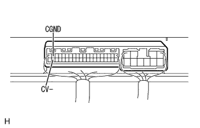
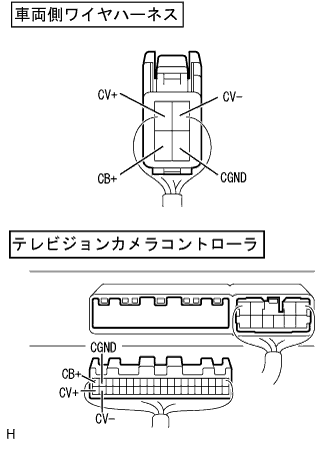
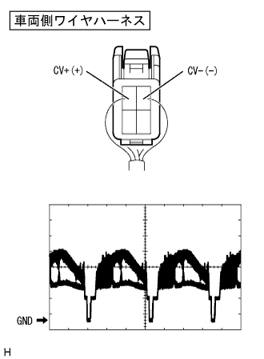

Back guide monitor system back guide monitor image is strange (color, image disturbance) (navigation screen is normal) (AVX) |

| Step 1 | Television camera controller inspection (CB+, CGND, CV-) |
 |
Voltage inspection
Use a SST (Toyota Electrical Tester) to inspect the voltage between each terminal from the back of the connector with the connector of the vehicle side wire harness connected.(The terminal array isreference)
| Tester connection | Measurement conditions | Reference value |
|---|---|---|
| CB+← → CGND | IG switch ON, shift position R range | 5.7-6.3V |
|  |
Conduction inspection
Using SST (Toyota Electrical Tester), check the conjunction between each terminal from the back of the connector with the connector of the vehicle side wire harness.(The terminal array isreference)
| Tester connection | Measurement conditions | standard |
|---|---|---|
| CGND ← → Body Earth | Always | There is an conductor |
| CV- ← → Body Earth | Always | There is an conductor |
|
| ||||
| NG | |
| Step 2 | Wire harness or connector inspection (Television Camera Controller ← → Television Camera ASSY) |
reference|  |
Preparation before inspection
Remove the connector of the television camera controller and the television camera ASSY.
Conduction inspection
Use SST (Toyota Electrical Tester) to inspect the conductor of the wire harness between the television camera controller and the television camera ASSY with the vehicle side wire harness connector separated.(The terminal array isreference)
| Measuring terminal (Television camera controller ← → television camera ASSY) | standard |
|---|---|
| CV+← → CV+ | There is an conductor |
| CV+← → CV- | There is an conductor |
| CGND ← → CGND | There is an conductor |
| CB+← → CB+ | There is an conductor |
|
| ||||
| OK | |
| Step 3 | Television camera ASSY inspection (CV+, CGND, CV-) |
|  |
Waveform inspection
Use a oscilloscope and check the waveform from the back of the vehicle wire harness connector with the connector of the vehicle side wire harness.(The terminal array isreference)
| item | Content |
|---|---|
| Measuring terminal | CV+← → CV- |
| Instrument set | 0.2V/Div, 0.2μs/Div |
| Measurement conditions | IG switch ON, shift position R range |
 |
Conduction inspection
Use SST (Toyota Electrical Tester) to inspect the CGND, CV-terminal and body ground from the back of the connector with the connector of the vehicle side wire harness.(The terminal array isreference)
| Tester connection | Measurement conditions | standard |
|---|---|---|
| CV- ← → Body Earth | Always | There is an conductor |
| CGND ← → Body Earth | Always | There is an conductor |
|
| ||||
| OK | ||
| ||